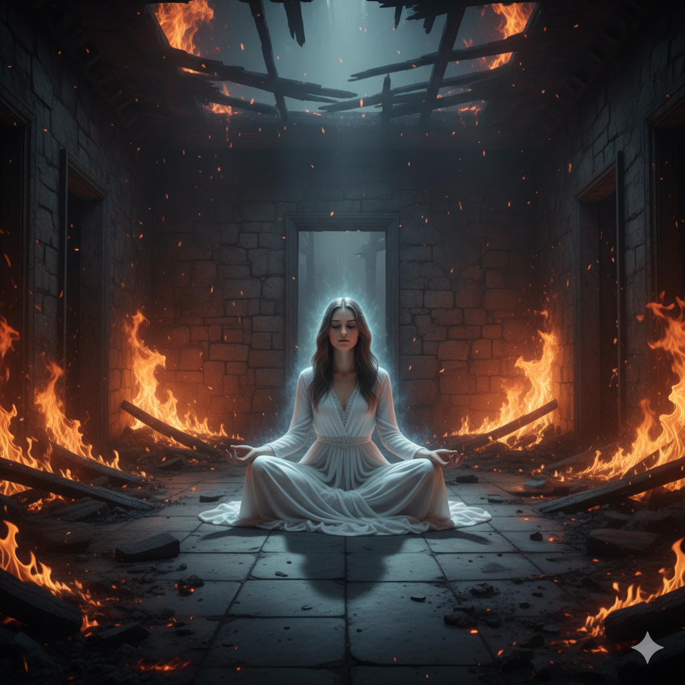

make-believe

I walked in through the black door and sat in the middle of the white room. Covered in shelves filled with toys, all from different worlds. One of the boxes was full of princesses, and another full of porcelain dolls, old, worn, and cracked. A cradle in the corner held a baby inside. The floor was hard and wooden as I sat cross-legged and started to play. The dolls came to life, the porcelain ones. Heads hanging off and black hair half gone, clothes ragged. I couldn’t control the princess world, or the vampire one, or the fairies in this mood. I was dead inside and wanted to see destruction—everything else tear itself apart. I saw the world in black and white. If I hurt, why shouldn’t everything else?
My pale skin, black hair, and red lips made me look beautiful. But my black collar with spikes, my black sweatshirt, black short skirt with chains, and knee-high boots with silver straps told a different tail—one of pain, hurt, danger, and survival. I sat there cross-legged and started to chant:
“Welcome dolls, dark and light, new and old, black and white. Come out to play in this world of pain and light. I am tired and want to see you burn alive. Get a knife and pick a partner. Let me watch as you stab and slash. Spill blood and take a life.”
They did as I asked, and the war began. Bodies scattered and parts lay detached. The beauty in destruction was otherworldly. One doll had an idea and wandered to the firemen’s box, getting matches. She opened it and took one out. Held the red end to the box and flicked. There was a spark, then sizzle, then light. She held it up, tilting her head from side to side as the beautiful orange flame flickered and danced. And then the flame flew and hit the bookshelf. The flames engulfed the bottom and started to spread. I watched in detachment, wondering how long until they ate everything.
They spread up, and for once, it felt right. I always felt like I was drowning, and the fire was beautiful, painted along every wall. The world so bright in my darkness, for once.The smoke started to get thick, and the baby started to cry. I just sat and smiled. My breath quickened with excitement, as it got harder to breathe. Why not use the oxygen quicker? It would be so heady to know I would be gone in mere minutes.
Then I opened my eyes and was back in my bedroom. It was just a daydream. I wish I could stay in that world forever; it hurt less. It felt so peaceful and content. In this one the children sang instead of screamed, this world was so happy with its frilly pink world. Whilst we drown in others' sins, when they call it redemption, while we suffered. I loved my world of make-believe because it was real, black and white, and untouchable.
back to home